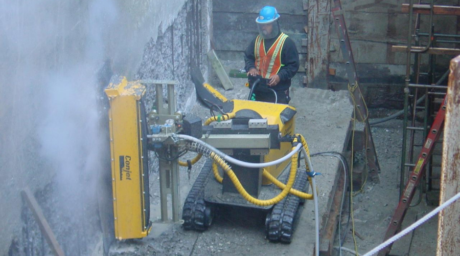

Гидроразрушение бетона
Гидроструйное разрушение бетона для ремонта и восстановления строительных конструкций хорошо зарекомендовало себя на практике как технология, позволяющая ускорить и удешевить процесс демонтажа с сохранением арматуры и несущей части сооружения. В основе метода лежит способность поданной под высоким давлением струи воды приобретать свойства режущего и дробящего инструмента

Принцип работы и возможности установки для гидроразрушения бетона
Водоструйное разрушение бетонных конструкций основано на принципе ударного действия воды, поданной под высоким давлением сконцентрированной направленной струей. При давлении 2000 бар направленный поток разрушает структуру бетона с эффективностью, превышающей любой механический режущий, ударный и вибрационный инструмент. При этом слой монолита распадается на мелкие фрагменты, которые уносятся водой и не создают опасности при разлете.
Область применения технологии гидравлического разрушения бетонных конструкций
Гидроструйное разрушение бетона применяется в строительстве как средство снятия слоев торкретирования и удаления поврежденной, не соответствующей требованиям прочности части конструкции. Технология позволяет значительно ускорить и технически упростить выполнение ряда задач:
- Подготовка к восстановлению бетонных конструкций и повышению прочности торкретированием;
- Удаление поврежденного и утратившего прочность бетона с частей армированных конструкций;
- Разрушение слоев, расположенных на монолитной или стандартной ЖБ детали сверх основного габарита;
- Очистка железобетонной детали перед ремонтом с обнажением арматуры для нанесения ремонтных растворов, торкрет-бетонных смесей;
- Локальное удаление монолитных частей конструкций на небольших площадях при подготовке к ремонту и демонтажу;
- Подготовка к демонтажу ЖБ конструкций и деталей с удалением бетонных слоев на местах соединения, герметизации, усиления стыков;
- Подготовка к восстановлению и укреплению промышленного пола и несущих конструкций с удалением некачественных и поврежденных частей монолита;
- Очистка технологических узлов и приспособлений, очистка сетчатых фильтров и сит от шлама с полным удалением цемента и промывкой сетки под давлением от 2000 бар;
- Подготовка частей конструкций к ремонту с использованием армопоясов, усиления армирования, наложения шин из металла и углепластика.
Технология может применяться на промышленных, строительных, жилых объектах, в том числе на мостах и эстакадах, дорожной инфраструктуре, для устранения последствий неправильной заливки жб монолита при строительстве.
Технологические преимущества метода разрушения бетона гидроструйной установкой
Гидроструйная методика разрушения бетона имеет ряд особенностей, дающих ей преимущества в сравнении с механической резкой и применением вибрационно-ударного инструмента.
- Отсутствует вибрация и удары, разрушается только выбранная область материала, воздействие не распространяется на другие части конструкции и отдельной детали.
- Методика позволяет выбрать небольшую по площади часть конструкции или разрушить бетон на значительной площади сплошным проходом и выборочно.
- При разрушении бетона водой остается неповрежденной арматурная сетка, ее состояние позволяет обойтись без демонтажа и замены металлической части конструкции.
- После удаления бетона арматура остается очищенной от фрагментов монолита, достаточно дождаться высыхания участка для дальнейшей работы.
- При работах по конструкции не передаются шумы и вибрация, звуковая составляющая не превышает нормативных показателей и не создает сложностей в населенных пунктах, в зданиях и на объектах.
- Полностью отсутствует пыль, разлет осколков бетона. Установка работает с водой технической чистоты, которая не является источником загрязнения. Технология не связана с применением абразивных, активных и вредных добавок в воду.
- Отсутствует необходимость вырезать часть конструкции вместе с арматурой и таким образом нарушать проектные требования к прочности.
- Работы можно проводить в закрытых помещениях, тоннелях, полостях и бетонных резервуарах, на открытых площадках и конструкциях высотой до 150 м (по длине шлангов).
- Горизонтальное, вертикальное или наклонное расположение участка работ не имеет значения.
Существенным преимуществом можно с уверенностью назвать возможность локального разрушения конструкций со сложным профилем. В отличие от любого механического инструмента, водоструйная установка может подать направленный поток в труднодоступные места. При этом струя и поток обрабатывают все части и точки рабочей зоны, даже те, куда не может проникнуть ударный и вибрационный инструмент.
Технологические особенности
Метод хорошо зарекомендовал себя как способ подготовки сложной конструкции к замене некачественного бетона — на полностью сохранившийся арматурный каркас можно набросить или залить новый раствор.
Удаление слоя бетона и торкрет-бетона
Удалить слой бетона марки М500 толщиной 20 см с армированной конструкции площадью
1 кв. м можно примерно за 40 - 50 минут при рабочем давлении от 2000 до 3800 бар и
расходе воды 50 - 100 литров в минуту. При наличии внутренних полостей в зоне
разрушения необходимо обеспечить технологическое окно размером 400 х 400 мм для ввода
головки.
Направленный под давлением сконцентрированный поток воды из головки водоструйной
установки разбивает бетонный монолит на мелкие фрагменты. Эффективность струи
позволяет работать с монолитами из бетона М500 класса прочности В30 - В35 независимо
от показателей водонепроницаемости и морозостойкости. Метод подходит для разрушения
монолитного бетона и армированных железобетонных конструкций без повреждения
арматурной сетки и других металлоконструкций.
В отличие от резки и виброразрушения,водоструйный метод полностью безыскровой. При
контакте с металлическими частями и арматурой струя воды не повреждает их и не
вызывает выброса искр. Водоструйная установка не применяется для удаления
торкретирующих конструкций из углеволокна, которое требует абразивной резки.
В зоне производства работ не находится персонал, рабочая часть установки подается
на лебедке и управляется оператором дистанционно.